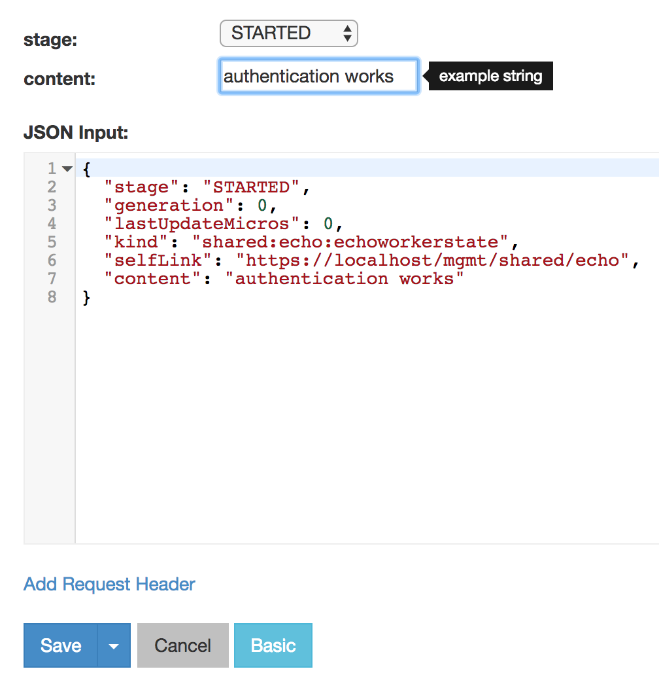

Lab 2.1 - Interact with a REST Extension¶
In this exercise, we are going to look at an iControl LX extension that ships with iControl. This is the iControl LX ‘presentation’ extension. This iControl LX extension present the REST API with a graphical interface. In this lab, we will test it.
Typically, when you login to BIG-IP via the Web Interface you are redirected to /mgmt/xui. In this exercise we are going to review the REST API via the Web interface, which looks like this:

Task 1 - View the API via Web Browser¶
Perform the following steps to complete this task:
In your browser, navigate to:
https://10.1.1.245/mgmt/toc.Enter the
adminuser credentials (it should beadmin/admin).You are now presented with the top level of REST collections/resources available on the BIG-IP platform.

Task 2 - Interact with a REST Resource¶
Perform the following steps to complete this task:
To filter the list of iControl REST resources, navigate to the textbox at the top of the page and enter ‘echo’:

Click on the
echoresource.
Task 3 - The ‘/presentation#’ Extension¶
Perform the following steps to complete this task:
Note
The current URI has /presentation#/ appended to the end of it. This is an
iControl LX extension responsible for rendering the iControl REST resource in the
web interface.
Remove the appended
presentation#/and note the raw JSON representation (you will be re-prompted to enter your user credentialsadmin/admin):
Click the ‘Back’ button in your browser to return to the
/presentation#/view. The URL should once again be:https://10.1.1.245/mgmt/shared/echo/presentation#/
Task 4 - Editing a REST Resource¶
Perform the following steps to complete this task:
Click the Edit button. You should now see the following:

This allows you to edit the value of the
/mgmt/shared/echoREST resource, via thepresentationextension.Click on the Advanced button. Now you can see the raw JSON representation of the REST resource.

Try editing the REST resource. In the
contentfield enterauthentication works(check the picture below). Note that it synchronizes between the textboxes and the raw ‘JSON input’ textfield. They are both representations of the same resource.You are now interacting with the iControl REST resource
echo, via the iControl LX ‘presentation’ extension.Click the Cancel button to discard your changes.
{kind=link}